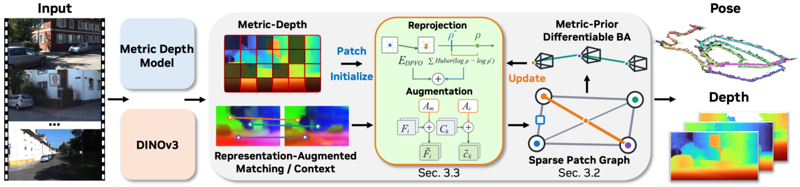

Paper Analysis
01 · Why Revisit a Local Estimator
MetricTrail 研究长单目视频中的相机运动和稠密重建。系统以 DPVO 的 bounded sparse local estimator 为核心，在有限 active window 内交替进行 patch matching、pose 优化和 depth 优化。作者的问题是，窗口和对应网络都保持局部时，如何让 patch 深度具有更好的 metric scale，并让匹配看到更稳定的视觉表示。
最终输出是世界坐标中的相机变换和稠密重建。每帧的 metric depth 在优化后的相机位姿下回投影到同一个 world frame，稀疏 BA 负责约束相机和 patch，稠密深度预测本身保持固定。
Mechanism
02 · Metric Depth as Initialization and Soft Constraint
传统 DPVO 初始化新 patch 时使用前几帧 active patches 的 median inverse depth，这能提供数值稳定性，却不含该像素位置的场景几何。MetricTrail 用冻结的 MoGe-2 为每帧预测 z-depth D̂，并把 patch inverse depth 初始化为 ρ̂_k=1/D̂_s(k)(u_k)。
初始化之后，预测值继续作为 unary depth factor 进入 BA：E=E_DPVO+λ_m Σ_k Huber_δ(logρ_k−logρ̂_k)。log 域使相对尺度误差更自然，Huber 允许多视角重投影证据在预测不可靠时偏离它。这个设计同时保留 foundation depth 的 metric 信息和局部几何优化的纠错能力。
ρ_k^(0)←1/D̂_s(k)(u_k); E(T,ρ)=E_DPVO(T,ρ)+λ_mΣ_k Huber_δ(logρ_k−logρ̂_k)
Mechanism
03 · DINOv3 Features for Correspondence
几何 state 决定 matcher 在哪里搜索，图像表示决定投影如何被修正。作者冻结 DINOv3 表征，把它们通过 learned adapters 加入 matching features 和 recurrent context。correspondence estimator 与 adapters 用 diverse short clips 训练，不额外做 long-sequence training。
这种组合把两个问题分开处理。metric depth 约束 patch 的深度尺度，DINOv3 提供跨外观变化更稳定的匹配线索，DPVO 的 sparse local optimizer 仍负责根据 reprojection 误差更新 pose 和 patch depth。
Inference
04 · Complete Long-Video System

Jingnan Gao et al. · Original figure, unmodified · CC BY 4.0 · Paper & Caption ↗
相机内参可以直接提供，也可以先由 RGB prefix 估计共享 camera model。loop closure 是可选的 retrieval 与 pose-graph 优化，使用 SALAD 找远距离近重复帧。稠密重建通过 T_i^{-1} 把每帧 depth 回投影到 world frame；loop closure 更新 pose 后可以重新装配稠密地图，无需重新运行 local estimator。
作者还支持同步、校准的 stereo。右相机通过固定 rig transform 加入同一时刻的 reprojection constraint，没有增加右相机 pose 变量，也不需要 stereo-specific training。
Evidence
05 · Evaluation Protocol
相机轨迹在 KITTI Odometry 00–10、Oxford Spires 和 VBR 上评估，指标是每序列一次 Sim(3) 对齐后的 full-sequence ATE。稠密重建使用 7Scenes、TUM-Dynamic、Oxford Spires，报告 sequence-level Sim(3) 和 point-to-point ICP 后的 CD 与 F1。RGB-only 默认关闭 loop closure，calibrated 和 stereo 作为额外设置。
这套协议把长序列轨迹误差与稠密点云误差分开。不能只看某个室内短序列的 CD 来概括长程定位，也不能把一次 Sim(3) 对齐后的结果理解成完全无尺度误差。
Evidence
06 · Results and Counterexamples
KITTI Odometry 的 RGB-only uncalibrated 平均 ATE 为 14.05 m，加入 loop closure 后为 9.78 m；提供内参并加入 loop closure 后为 7.39 m，校准 stereo 加 loop closure 后为 3.00 m。7Scenes 的 CD/F1 为 0.04 m/97.60%，Oxford Spires 为 0.98 m/95.12%，相对 LingBot-MAP 的 1.68 m/90.58% 有改善。KITTI video depth 的 Abs Rel 为 0.057，δ<1.25 为 97.8%。
TUM-Dynamic 上 CD 0.13 m、F1 89.58% 低于若干基线，说明动态内容仍然是薄弱场景。提供内参时 KITTI-02 处理速度为 12.70 FPS、峰值 3.21 GB。作者的主结果支持 metric depth 与 local optimization 的组合，不能据此推出所有动态或无校准场景都稳定受益。
Transfer Analysis
07 · Relation to LingBot-Map and Semantic Guidance
MetricTrail 提供的是几何路径，语义可以沿同一接口进入。对 LingBot-Map，可把实例级语义相似度用于 correspondence candidate ranking，把语义边界作为跨帧匹配的软权重，再让几何 reprojection 和 depth loss 决定它是否可靠。metric depth 的作用也可作为几何 confidence，控制语义写入 memory 的权重。
两者的系统范式不同。MetricTrail 在推理时保留局部优化并允许替换 depth provider，LingBot-Map 依赖学习到的流式上下文。迁移时应保持相同窗口、时间预算和 memory 容量，分别测语义辅助匹配对轨迹、深度和点图的影响，避免把后处理的开放词汇查询收益写成底层几何收益。
Discussion
Reading Questions
question
answer
question
answer
question
answer
References
Figure 2 is reproduced from the authors' arXiv HTML page for scholarly explanation; the paper is distributed under CC BY 4.0.
Verified on 2026-11-08. Paper results refer to the linked versions. Repository references were checked on this date.